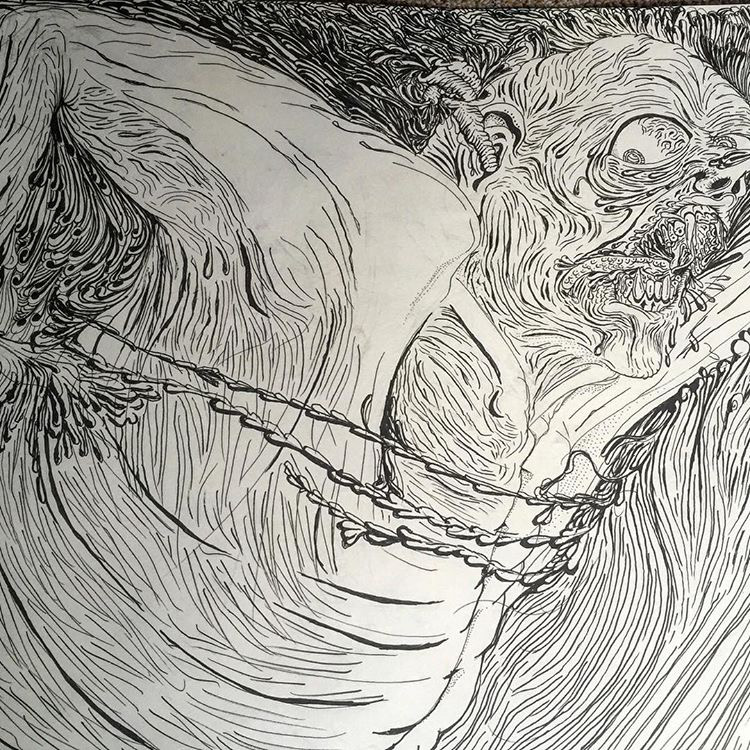

"finding beuty in the ugly"
It was during his time lifeguarding at a pool in 2015 that the inspiration for "MASA" struck The people in the pool were separated and swimming in lanes. "As a society we swim in our lanes... we have an even amount of space and we're not working together" Reflected morales. That was the inspiration for the piece, with thin figures all swimming in one direction, many of which are shown mid-gasping for air. The shapes of the drops of water combined with the extended arm reminded Morales's cousin Juan of a masa plant when he saw the piece near completion . That was where the pieces name came from
 AYER 2016. Medium Pen on paper
Was the starting piece for Jesus Morales. The piece took 6 months to draw and its conveying of sharpness and energy were presented from the start. That piece focuses on a lone figure swimming, with splashing on the left and the roaring water on the right. Two other figures were taken over by the water, with just a mouth and foot. Both the pieces name and design revolve around loneliness. The piece was “ the old me, where I was when I initially sketched... sad, lonely, not doing what I wanted to do,” Morales remembers “Ayer” didn’t have a name until he ran into a friend he hadn’t seen since he graduated high school. This friend was a
 WATER FIGHT 2016. Medium Pen on paper
WATER FIGHT 2016. Medium Pen on paper
year younger and was struggling with school and work.”I saw me in him... it was like yesterday I was in that mood .” The figures gross futures are meant to reflect how disgusting loneliness is. The wrinkles all over the body combined with the frantic slashing and the taking over figures emphasize how difficult it is to overcome loneliness. The figures reflect being “ brainwashed into society, what people think about you,” as well hollowness. The sharp , shiny teeth and the tube escaping the ear add energy and grossness to “Ayer” Water fight was inspired by water pol0. A fight against white and black . “Water fight” Description- In our society we are very divided into two groups and no in between This visual shows that even though we fight we are are all struggling to stay afloat. Masa, Ayer, Water fight were displayed for a group collective show called “waves” in 2016 at the inner sanctum a artist non profit in Boston. Here is a link to a video about it. —- https://youtu.be/cXxUQ57-DCU